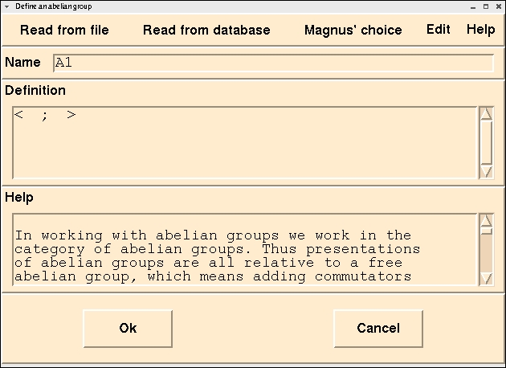

To illustrate the steps we are going to "Check-in" a trivial
Abelian Group. So we:
(1) Select "Check-in" from the main menu
(2) Select "Abelian Group" from the drop-down menu
This will give us the a screen that is designed to allow entering
the elements of an Abelian group:

This screen gives us 5 panels:
The first contains the menu.
The menu allows you to choose the source of your group definition.
You can read groups from files, read them from a database, or let
Magnus make a random choice. Random groups are useful for testing
new user-defined "Tools" (procedures).
The second contains the system-assigned name for the group
You can choose any name you like or take the system default.
The third contains the definition of the Abelian Group
For the purpose of this illustration we are going to choose
a group containing only two elements a and b with
no relators.
Group elements are entered before the semicolon and are separated by commas.
Relators are added after the semicolon and are separated by commas.